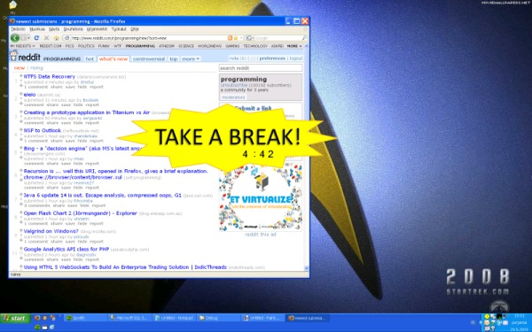
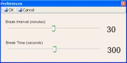
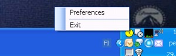

Take a Break!
[Source]
Reminds user to keep breaks
Break image and counter stays always on top

Break image
User can set break interval and break time

Preferences windows
Only notifyincon is shown when program is running

Take a Break notify icon